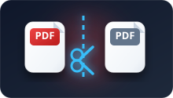

The Complete Online PDF & Image Toolkit
Use our full suite of professional tools to convert, compress, edit, split, merge, and protect your PDF documents instantly. Fast, secure, and zero installation required.
Popular Tools
JPG to PDF
Combine multiple JPG images into a single, organized PDF file. Our easy-to-use tool allows you to merge files quickly and securely, right in your browser. Perfect for creating albums, reports, or archives.
PDF to JPG
Convert each page of a PDF document into a high-quality JPG image. This browser-based tool ensures your files remain private and secure, perfect for when you need to share or embed individual pages.
Word to PDF
Turn your DOC and DOCX files into professional, universally readable PDF documents. This is the perfect tool for sharing and archiving your work, ensuring the layout and formatting are preserved.
PowerPoint to PDF
Convert your PowerPoint presentations into a high-quality PDF format. Ensure your slides look the same on every device, every time, making them easy to share, print, and archive.
Excel to PDF
Convert your Excel spreadsheets into a clean, professional PDF document. Ideal for creating reports, invoices, and sharing data while maintaining the original table structure and formatting.
Merge PDF
Combine multiple PDF documents into a single, organized file. Our easy-to-use tool allows you to merge files quickly and securely, right in your browser, perfect for streamlining your documents.

Split PDF
Extract specific pages or page ranges from any PDF document. This tool is perfect for creating smaller, more manageable files from large documents, allowing you to share only what's necessary.
Crop PDF
Remove unwanted margins and content from your PDF pages. Crop your documents to focus on the important content and create cleaner, more professional-looking files.
Add Text to PDF
Quickly add text annotations or fill out forms in your PDF documents. A simple and secure way to edit your files directly in the browser, without needing any complex software.
Organize PDF
Visually reorder, rotate, and delete pages in your PDF files. Our intuitive interface makes it simple to arrange your document exactly how you want it, giving you full control over your file's structure.
Text to PDF
Quickly convert your plain text files into a clean, searchable PDF. This tool is perfect for archiving notes, code, or simple documents in a universally readable format that preserves your text layout.
Compress PDF
Significantly reduce the file size of your PDF documents without sacrificing quality. Choose your desired compression level for optimal results, making your files easier to email and store.